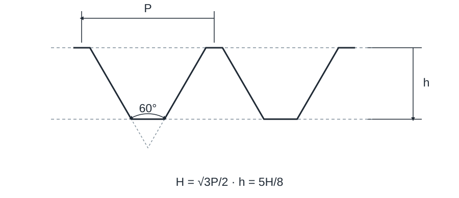

Tolerance designations for clearance fits
Numeric source awaits full verification against the current standard. Original values are retained; do not treat them as verified limits of size.

Own explanatory schematic; not a standard manufacturing drawing. Symbols describe the illustrated type; not every table parameter is drawn.